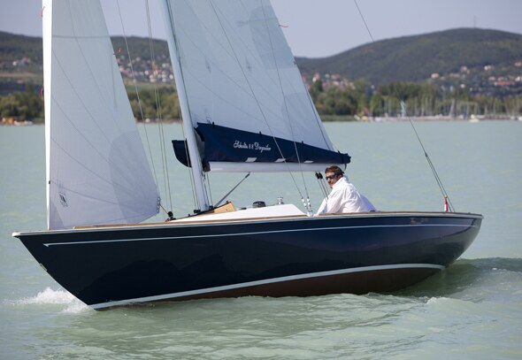
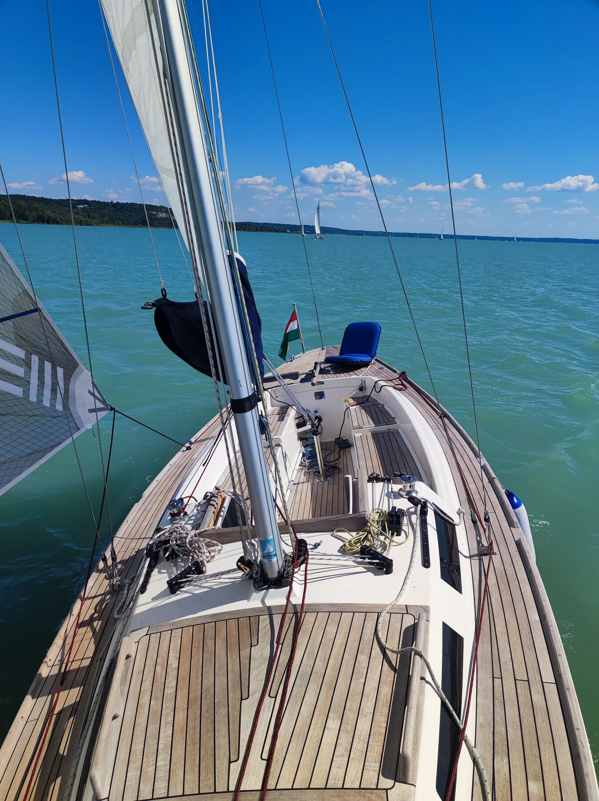

Egyedül
Kényelmesen vitorlázható egy emberrel
Furlex fockroller, lazy jack, a kötelek a kokpitba futnak. Nem kell előre mászni, nem kell legénység. Sportos hajó, közel vagy a vízhez, érzed, ahogy megy. Code Zeróval gyenge szélben is gyors.